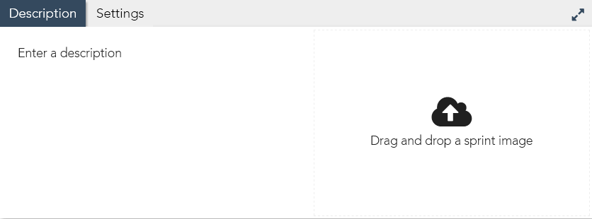

Build the source code
Create teaching plan
Share it with other instructors
Classroom tests with Sandbox Mode
...
Work with source code provider
Focus on 1 concept
Prioritize coding literacy
Direct requests from the sales team
Content that complements what's currently available
...
Create Sprint
New SprintCreate a sprint from sracth
Import SprintCreate a sprint from imported data
Sprint Info
Sprint TitleInclude syntax in the sprint name
...
Content Type...
CoreSelect the appropriate core
Description & Settings
Description must be short enough to fit inside the pop-up window in Learner Mode
No image is needed for sprints
Select the appropriate level according to the Core Curriculum
Don't forget to enable JavasScript console if the sprint requires it
Srpint Structure
The first step should always be named Introduction
Include dependency step if the sprint requires it
Dedicate one step to the syntax
All relevant variants of the syntax should also be covered
Reinforce all knowledge based steps with excercises
The last step should always be named Summary
See Guidelines for step naming convention
Curriculum
...
...
...
...
...
...
...
Instruction Formatting
Using TemplateCopy & paste the code under Template into the instruction editor's Source code window
 Line Numbering
Line Numbering
Given a particular line in the CSS file contains the string catpaw and it occurs exactly once in the entire CSS code, the number of that line can be retrieved dynamically using the following code
##LINE("style.css","catpaw")##
The resulting location can also be offset
##LINE("style.css","catpaw")+2##
All line locations must be dynamically referenced
Line locations should look like this in Learner Mode
Code ReferencesAlways highlight code references
Highlight selection should be limited to syntax only
Code SnippetCode inside a snippet should primarily help to understand syntax structure, do not give actual functioning code
Alert the learner to not use the snippet for copy-and-paste workflow
ObjectivesVisually separate the objectives from the rest of the instruction text
When tab switching is required to complete the objectives, use the Notes format to alert the learner
Offer tips to help the learner progress, but don't give out answers
There should be no more than 3 objectives in a step
......
Step: Introduction
ScenarioDescribe a common scenario where the learning outcome may be useful
Keep the information general because this step won't be tested and there is no way to ensure the learner retains what's stated here
Learning OutcomeSpecifically what the learner will and/or won't do in this sprint
ResultsVisual demonstration of what can be achieved, this can be in the output panel if the sprint produces a visually interesting output, otherwise use external visuals
Template
Many HTML elements are <b>block elements</b> by default, meaning they will take up the entire row of space even if they don't need all of it. This can be good or bad depending on what you're trying to create.
<br><br>
In this sprint you will learn how to turn any element into an <b>inline element</b>.
<br><br><a href='http://bsdacademysandbox.com/curriculum/wp-content/uploads/2017/08/img.png' target='_blank'><img src='http://bsdacademysandbox.com/curriculum/wp-content/uploads/2017/08/img.png'></a>
<hr>
<p class='highlight'>When you're ready, click <b>Next Step</b> to get started</p>
Step: Dependency Concepts
OverviewSkip if there is no dependency
If the dependency is an available sprint on LaunchBox, simply provide link and redirect learner, the link should always open a new window
Otherwise, start with the dependency name and a general description of the concept, clarify any abbreviated terms
RelevanceHow the concept relate to this sprint and its encompassing domain
Examples & BreakdownsDemonstrate a practical use case, break it down and explain each component
Use the code snippet and/or bullet points to emphasize this section
ObjectivesFocus on having the learner reporduce the syntax
If there is no syntax involved, just make sure to test the learner's understanding of the concept
Template
The parent-child technique ( also called hierarchy ) is widely used to keep large number of things well structured.
<br><br>
On the web, a typical parent-child relationship looks like this:
<pre class='language-html'><code> <!-- Example. Do not copy & paste -->
<div id="parent">
<p class="child"></p>
<img class="child" src="#">
</div></code></pre>
<ul>
<li><p class='notes'>Both <code><p></code> and <code><img></code> are child elements of <code><div></code></p></li>
<li><p class='notes'>The <code><p></code> element is the <b>first child</b></p></li>
<li><p class='notes'>The <code><img></code> element is the <b>second child</b></p></li>
</ul>
<p style='text-align:center'><b>- OBJECTIVES -</b></p>
<p class='highlight'>On <b>HTML line ##LINE('index.html','<html>')##</b> - <b>##LINE('index.html','</html>')##</b>, find the <b>second child</b> of the <code><html></code> element</p>
<p class='notes' style='text-align:center'>Switch over to the <b>style.css</b> tab</p>
<p class='highlight'>On <b>CSS line ##LINE('style.css','UNIQUE STRING')##</b>, Add a <b>selector</b> to target the second child</p>
<hr>
<p class='highlight'><b>Check Objectives</b> to continue</p>
Step: Syntax & Variation
Syntax & BreakdownsDescribe the purpose of the syntax
Show it inside the code snippet and make clear to not copy & paste the content of the snippet
Break the syntax down into components and explain each one
ExampleShow functional use of the syntax, relate components in the syntax to natural language
ObjectivesFocus on having the learner reporduce the syntax
Template
A function can run <b>some time after</b> it is called, and here is how you can do it:
<pre class='language-javascript'><code> /* Example. Do not copy & paste */
setTimeout(functionName, delay);</code></pre>
<ul>
<li><p class='notes'><code>functionName</code> is the name of the function we want to call</p></li>
<li><p class='notes'><code>delay</code> is the amount of <b>milliseconds</b> the function will wait before it runs</p></li>
<li><p class='notes'><b>Example:</b> <code>setTimeout(sayHello, 500);</code> will run the <code>sayHello()</code> function with a <b>500 milliseconds</b> delay ( i.e. after 0.5 second )</p></li>
</ul>
<p style='text-align:center'><b>- OBJECTIVES -</b></p>
<p class='highlight'>On <b>JS line ##LINE('script.js','UINQUE STRING')##</b>, run the <code>sayHello()</code> function with a <b>800 milliseconds</b> delay</p>
<p class='notes'><b>TIP:</b> Use the <code>setTimout()</code> method</p>
<hr>
<p class='highlight'><b>Check Objectives</b> to continue</p>
Step: Exercise
The ProblemPresent a problem that would be ideally sovlved by the syntax from the preceding step
Help to understand the problem rather than explaining how it can be solved
The QuestionClearly state the expected outcome
ObjectivesFocus on having the learner apply the syntax
Template
In the output panel, you can see 3 images ( <b>HTML line ##LINE('index.html','image 1')##</b> - <b>##LINE('index.html','image 3')##</b> ). The middle one is bigger than the other two, and it breaks the design flow of the page.
<br><br>
How can you make the 3 images all have the same size?
<p style='text-align:center'><b>- OBJECTIVES -</b></p>
<p class='highlight'>On <b>CSS line ##LINE('style.css','image 2')##</b>, make the 2nd image the <b>same size</b> as the other two</p>
<hr>
<p class='highlight'><b>Check Objectives</b> to continue</p>
Step: Summary
RecapReinterate the objectives completed by the learner
End NoteMention Sandbox Mode where the learner can test things out further
Template
Well done! You have completed this sprint, here is a recap:
<ul>
<li><p class='notes'>Add the <code>width</code> & <code>height</code> properties to elements to resize them</p></li>
<li><p class='notes'>Use both <b>px</b> and <b>%</b> values for different effects</p></li>
</ul>
<hr>
<p class='highlight'>Don't forget to try things out in <b>Sandbox Mode</b></p>
Workflow
Define the state of the code in each step that best relate to the instructions
Don't use modify content at all during this stage, focus on progression and flow
Revise the instruction if necessary
...
General Formatting
The first HTML, CSS and JavasScript file should always be named index.html, style.css and script.js respectively
Separate words in file names with the dash symbol, e.g. about-page.html
Set unused files to hidden
Ensure proper indentation, one indentation is 4 spaces
...
Editable Blocks
An editable block creates a fixed space in the code panel where the learner can type, an empty editale should always contain 4 spaces
#BEGIN_EDITABLE# #END_EDITABLE#
Occupied editable blocks should have a 1 space padding on both ends
#BEGIN_EDITABLE# var foo = "bar"; #END_EDITABLE#
...
Editable Lines
...
...
Comments
Comments on top of editable blocks containing code
Comments next to empty editable blocks
...
Flow Assessment
Work with other instructors to ensure the flow will work in classrooms
There should be 3 or less objectives per step
Every step is tested
Paragraphs are kept short & concise
Language & tone is appropriate
AST
The Syntax Use the following AST syntax to test HTML & CSS code:
pass.if.html.editable(n).equivalent(expectedCode);
pass.if.css.editable(n).equivalent(expectedCode);
editable(0) targets code in the first editable, editable(1) the second, and so on...
Use parenthesis to indicate editable location, using square brackets is not considered the AST approach
expectedCode must be valid code
If the code files do not have default names, i.e. index.html and style.css, use the following syntax instead
pass.if.filename.html.editable(n).equivalent(expectedCode);
pass.if.filename.css.editable(n).equivalent(expectedCode);
Don't always rely on auto-generated feedback, write elaborate error messages when it is necessary
pass("useful feedback here").if.html.editable(n).equivalent("");
Provide line numbers when a single objective tests code in multiple places, for example:
pass("CSS LINE 11 - feedback").if.css.editable(2).equivalent("width: 20px");
pass("CSS LINE 13 - feedback").if.css.editable(3).equivalent("height: 50px");
When the position of editable(n) is unpreditable, insert an unique string on the same line and use the following method to retrive line number dynamically
function line(file, str) {let n; file.text.split(/\r?\n/).forEach((e, i) => { e.includes(str) ? (n = i + 1) : null }); return n;}
pass("CSS LINE " + line(code.css, "uniqueString") + " - feedback").if.css.editable(2).equivalent("width: 20px");
pass("CSS LINE " + line(code.css, "uniqueString") + " - feedback").if.css.editable(3).equivalent("height: 50px");
Both single & double quotes are allowed by the AST tests, as long as the opening & closing quotes match
The following test will pass <a href="#"></a> or <a href='#'></a>
pass.if.html.editable(n).equivalent('<a href="#"></a>');
...
HTML
Element & Content <div></div>
pass.if.html.editable(n).equivalent("<div></div>");
<button>Submit</button>
pass.if.html.editable(n).equivalent("<button>Submit</button>");
<p id="info"></p>
pass.if.html.editable(n).equivalent('<p id="info"></p>');
The following test will pass <input id="user" type="text"> or <input type="text" id="user">
pass.if.html.editable(n).equivalent.to('<input id="user" type="text">');
Given that line n in the HTML file is <img #BEGIN_EDITABLE# #END_EDITABLE#> and the learner is expected to insert src="http://link.png", use the following test
pass.if.html(code.html.text.split(/\r?\n/)[n - 1]).equivalent('<img src="http://link.png">');
Alternatively, concatenate learner input with additional strings to make up valid HTML code
pass.if.html("<img " + code.html.editable[n] + ">").equivalent('<img src="http://link.png">');
...
CSS
Rule div { width: 100px; height: 120px; }
pass.if.css.editable(n).equivalent("div { width: 100px; height: 120px; }");
#idName
pass.if.css(code.css.editable[0] + "{}").equivalent("#idName {}");
position: absolute;
pass.if.css.editable(n).equivalent("position: absolute");
top: 0px;
pass.if.css.editable(n).equivalent.to("top: 0").or("top: 0px").or("top: 0%");
margin: 5% auto 10px auto;
pass.if.css.editable(n).equivalent("margin: 5% auto 10px auto");
border: solid black;
pass.if.css.editable(n).equivalent.to("border: solid black").or("border: black solid");
Although border: solid black and border: black solid are both valid and will produce the same result, ordering standards do exist and should be respected by LaunchBox
Partial SyntaxRefer to Partial Syntax in the HTML card
Known Issues The following test is syntactically correct but a valid input triggers the error "Make sure you have a semi-colon after ..."
pass.if.css.editable(n).equivalent('background-image: url("http://link.png")');
The following test can not test for multiple selectors
pass.if.css.editable(n).equivalent("#idName, .className, tagName {}");
...
CSS Global [Upcoming]
Syntax Pass the learner if the target CSS file contains a rule with specified selector and declaration
pass.if.css.selector(selector).contains(declaration);
The default CSS file is style.css, use if.filename.css to target additional CSS file
selector and declaration must be string values
declaration must be valid CSS code
JavasScript
RegExpAST syntax for testing JavasScript is not yet implemented, use Regular Expression to achieve similar results
...
...
Instructor Team
...
...
...
...
...
...
...
Publish
...
...
...
...
...
...
...
Code Club
...
...
...
...
...
...
...